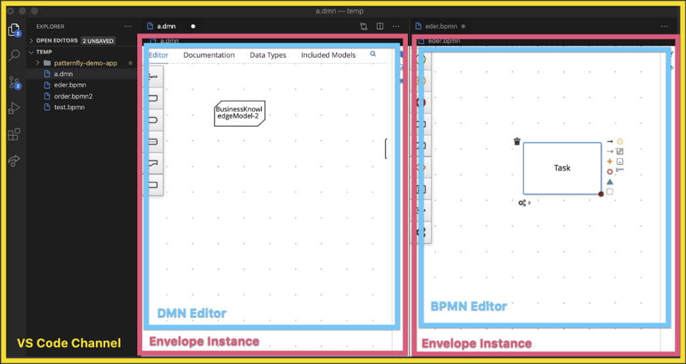

Kogito Tooling history and custom Envelopes
Since the beginning of Kogito Tooling our goal has been clear — We want to bring existing (and new) components and features to different mediums, allowing users to choose what works best for them. This post covers a little bit of the development history of our project and also presents a new concept called Custom Envelope, which helps us achieve our goal by enabling the creation of components that can be ran in multiple platforms.
If you’ve been following our updates, you know that our first prototypes were VS Code and Chrome extensions featuring our BPMN and DMN Editors. This then expanded to a Desktop application, the Online editors, and the Test Scenario Editor, making a total of four different media, or Channels, as we call them, and three different Editors.
People that have been more closely involved with our development would know that the BPMN, DMN and Test Scenario Editors are written in Java and transpiled to JavaScript using GWT. It’s hardly an easy task to bring those Editors to run in all these different channels, so we’ve been perfecting our abstractions for some time now to achieve what we have today.
These Editors have very specific needs at runtime and basically “take over” the page where they are opening at, so we needed a way to allow our containing applications (or Channels) to be independent of the architecture and technology stack of our Editors. After some research about the subject and many prototypes, we settled for the solution that would give us complete CSS and Window contexts isolation, and we’ve decided to wrap the Editors inside iframes.
I know, I know, iframes do not have the best reputation… But don’t stop reading just yet. This article will show you how we tamed the iframe and made it our most important ally.
The <iframe>
As you know, iframes allow web pages to embed another web page, while preserving separate contexts of styles and code, making sure that the containing application is not exposed to the embedded one. This is both good and bad, since we’re talking about Editors here, and they obviously need to communicate with the containing application. An Editor needs a containing application as much as the containing application needs the Editor. Or even better — Editors need Channels as much as Channels need Editors.
The communication between Editors and Channels is made using the well-known postMessage method. If your Editor runs on the same domain that your Channel is, you can use other methods too, but our use cases required cross-domain communication, so we had no other choice. Also, for maybe the same reasons that we needed to use this solution, VS Code’s Webviews only communicate through a postMessage (*) method, so if we wanted to support VS Code, we would have to support postMessage.
Here’s how it works:
channelIndex.html
<body>
<script>
window.addEventListener(“message”, (msg) => {
console.log(”Message received:”, msg);
});
</script>
<h1> This is a Channel </h1>
<iframe src=“editorIndex.html”>
</body>editorIndex.html
<body>
<script>
window.parent.postMessage(”Hello from an Editor!”);
</script>
<h1> This is an Editor </h1>
</body>As expected, when channelIndex.html loads, it will print “Message received: Hello from an Editor!” to the console. Amazing, right? Well… not so much. This API, although very flexible, is also very raw and error-prone. There’s no callback mechanism, no type-safe communication, no delivery guarantee, no error-treatment, and the only thing you can pass as data is a JSON-serializable object. That’s right, no functions at all. For simple message exchanging use cases, this might be enough, but for a full-flavored Editor, we needed more.
The Envelope
Our early attempts of taming this communication was very basic. We used Enums to control what was the type of the message and a switch-case to route the messages to their respective handlers. Worked well for some time, but we started getting lost with so many REQUEST, RESPONSE and NOTIFY message types. It was hard to tell who was the requester and who was the receiver and this resulted in many of our team members (including myself) getting confused. Also, the number of messages was growing fast and it was getting hard to separate them logically. Our switch-case started to become a monster and we decided that it was time for a change.
We introduced support for Promise’fied requests and with some TypeScript magic, we were able to use interfaces to define what could be exchanged between Editors and Channels. So instead of Enums and big switch-cases, we now could simply define an interface.
export interface ExampleEditorEnvelopeApi {
getContent(): Promise<string>;
undo(): void;
redo(): void;
}As you can see, these are plain, simply interfaces. And they are not necessarily related to Editors, as we can define an interface for any domain. That’s when we saw an abstraction emerge from our solution. We had created a library that could handle the messy communication between an iframe (Editor) and its containing application (Channel).
At the same time, we started to have the need to reuse code among our three Editors. We started with a nice loading spinner and moved to State Control API (undo/redo/isDirty), then we added the Keyboard Shortcuts API and the Guided Tour API. Every one of those new features required code to be reused by the Editors. Some of them with UI components associated with it, like the Keyboard Shortcuts panel, for example.
The way we solved that was by defining an interface that Editors had to implement and wrapping the Editors inside a containing component. All that inside the Editor’s iframe. At this point, it was clear to us that the combination of a communication library and a containing component was yet another emerging abstraction. We called it the Envelope.

In summary, the Envelope was an application that:
- Could render an Editor;
- Could communicate with a Channel in a type-safe, Promise’fied and predictable way;
- Could be rendered inside an iframe.
We as a team were very excited when we realized all that. We were confident that our abstractions were right for us and that we could then create and reuse Editors using any technology we wanted. We knew that by implementing the Editor API, Editors could be reused in our four different Channels and it was very easy to change and evolve this API, since now the communication was type-safe and felt very natural to use, as calls were simply Promises.
One last step that we had to make was making sure that the code we wrote to glue the GWT-based Editors together with the Envelope didn’t leak into non-GWT Editors. We had to make a drastic reorganization to our code to ensure that. But on our last release (0.6.1), we finished the @kogito-tooling/editor package. Which contains every bit of code you need to create your very own Editor. (**) This was a huge milestone for us.
Phew! Okay. That was quite a ride. It’s important to understand what we’ve done to understand what is coming. With the stabilization of our abstractions and APIs, we were able to see things more clearly and experiment. The most recent result of these experiments is the creation of custom Envelopes. What once was specific to Editors and its APIs, is now a generic function capable of building an application that can render any type of component and communicate with any Channel.
The custom Envelopes
In summary, a custom Envelope is an application that:
- Can render a view with a well-defined API;
- Can communicate with a Channel in a type-safe, Promise’fied and predictable way;
- Can be rendered inside an iframe.
Pretty similar to before, right? Except for number 1.
The first version of an Envelope was specific for Editors, meaning that the API it exposed to the Channel was specific to Editors, and the API that is consumed from the Channel was specific to Editors. Also, the view was specific to Editors, containing the Keyboard Shortcuts panel and such. We realized that we could make our Envelope be parametrized and render any kind of component, and provide and consume any API.
Custom Envelopes allow us to bring virtually any component to the Multiplying Architecture, meaning that we can have a component running in any of our Channels seamlessly.
As a general rule, we don’t want every component to be wrapped by a Custom Envelope, since it adds complexity to our code base and some runtime overhead as well. So our approach is only wrapping a component in a Custom Envelope when we’re sure that we’ll be running this component in multiple Channels. This way, we avoid unnecessary complexity and take full advantage of the programming model we created, which is basically being able to reuse code of components that are needed across different Channels.
To give you a taste of what’s possible with Custom Envelopes, I created this ‘To do’ List component, which runs in both Web apps and as a VS Code Extension. It’s a simple example, but it showcases the potential of Custom Envelopes. Take a look.
See how the ‘To do’ List view is the same, but the Channels have completely different ways of interacting with it? That allows us to follow the Channel’s UX and conventions, keeping the experience native to wherever our Envelope’d component is running on.
The basic idea is to give the Channels the possibility to control the component. Basically, what a Channel can do with the ‘To do’ List view is defined by this interface:
export interface TodoListEnvelopeApi {
todoList__addItem(item: string): Promise<void>;
todoList__getItems(): Promise<Item[]>;
todoList__markAllAsCompleted(): void;
}
export interface Item {
label: string;
completed: boolean;
}On the other hand, what the ‘To do’ List view can do with the current Channel is defined by this other interface:
export interface TodoListChannelApi {
todoList__itemRemoved(item: string): void;
}
As a convention, methods returning void are notifications and methods returning Promises are requests. To add a new item, the Channel must call todoList__addItem method. That’s what allows us to treat Envelope’d components as if they were ‘local’ to our application.
To communicate with an Envelope’d component from a Channel, you must instantiate an EnvelopeServer, which is the class responsible for handling the communication. This way, to add a new item using the TodoListEnvelopeApi interface you’d write:
envelopeServer.envelopeApi.requests.todoList__addItem("New item");This returns a Promise that will be resolved when the item is finished adding. Pretty cool, right? All the complicated parts are abstracted from the consumer, making it all look like a simple method call.
On the following weeks, the Kogito Tooling team will publish a blog post about Editors and Custom Envelopes, pointing to our recently updated Examples repository. This blogpost will give you a much better idea about how you can start creating and consuming Envelope’d components.
I hope you liked this history piece and, as always, stay tuned for more posts about what our engineering team is working on. If you haven’t yet, don’t forget to try our DMN and BPMN VS Code extensions and our Chrome Extension. Also, check out the Online Editor!
(*) VS Code’s postMessage is even more limited than the browser’s, since it doesn’t support transferables. And will probably never support it.
(**) Expect API changes on 0.7.0. We improved the communication with the Channel even more!